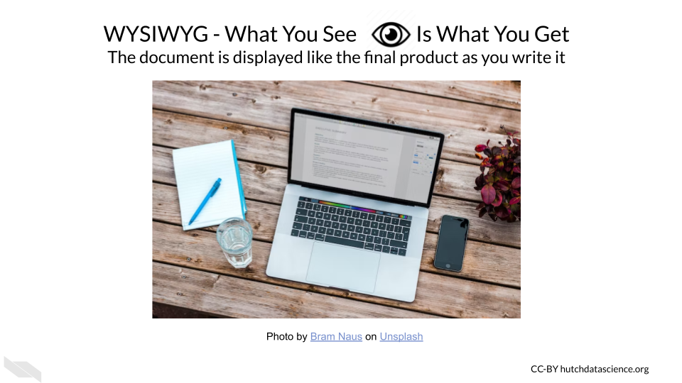
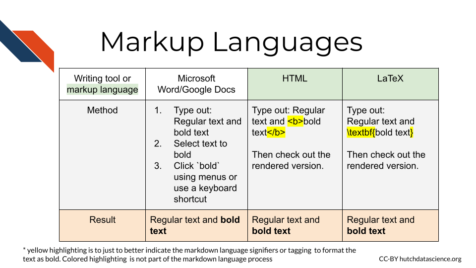
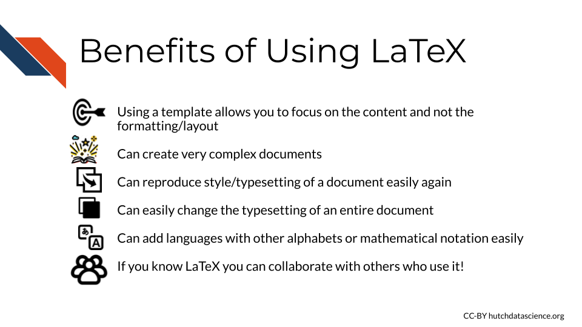

Chapter 2 LaTeX
You may or may not have heard people talking about LaTeX (pronounced ‘/ˈlɑːtɛx/’ LAH-tekh or ‘/ˈleɪtɛx/’ LAY-tekh), which is not to be confused with the the material latex (pronounced ‘/ˈleɪtɛks/’ LAY-tekhs). In this course we will explain what LaTeX is and how it came to be.

![Learning Objectives: 1. Explain what LaTeX is and how it came to be 2. Understand that writing a document involves two distinct steps 1) writing the content and 2) determining how the content should be displayed, 3. Recognize that applications like microsoft word interactively show you the formatting/arrangement of the document as you write, while markup languages embed how a file should display using specific tags within the text that are later manifested, 4.Begin to understand how markup language tags result in changes in how text is displayed](02-latex_files/figure-html/1UgGtVn7RsqdQ4pJxDk_dueSyREHcH-uWTNAT27E2mG8_g1bb9ca840c8_0_360.png)
2.2 Document Preparation System
LaTeX is a “document preparation system” according to the LaTeX project (“LaTeX - A Document Preparation System” n.d.). It is often used to write scientific or technical documents, but it can be used for formatting or arranging any type of document. This process of determining the final look of a writing product is called typesetting.
Typesetting determines how text looks and where it is located in a document when it is its final stage - like when it is rendered or printed. It refers to fonts, text sizing, line spacing, the arrangement of tables and images, and more.
Although LaTeX has a reputation for being quite tricky, it is very powerful in enabling users to create documents with complex and customized text formatting and layouts much more easily than doing so with systems like Microsoft Word.

2.3 History
LaTeX was originally released in 1984 by Leslie Lamport. LaTeX is one of several programs (but probably the most widely used in academia - in part, because it is free!) that makes it easier to use the typesetting system called TeX.
Why is it called LaTeX?
The “La” is believed to be for Lamport’s last name.
The “Tex” is for the typesetting system Tex.
2.3.1 TeX
TeX (pronounced ‘/ˈtɛx/’ tekh) is a typesetting system developed by Donald E. Knuth in the 1970s to help him format the text in his books more to his satisfaction (“TeX” 2022).
Why is it called Tex?
Tex is named as an abbreviation for the Greek word τέχνη (ΤΕΧΝΗ techn), which directly translates to art or craft (“TeX” 2022).
Typesetting has origins in how documents used to be printed using manual stamping mechanisms, where someone would provide the contents of the text in writing by hand that would be translated to a version with the intended layout and style for printing.

Overtime this process got replaced by digital options and eventually resulted in the concept of WYSIWYG (What you see is what you get), where programs like Microsoft Word let you interactively work with the typesetting of a document as you write the content.

When you use a program like Microsoft Word, you are essentially giving it two sets of directions simultaneously, one which is the content of the text, and one which is the style and layout of the text.
With LaTeX we are more aware that we are actually telling the computer how to arrange the text. It also gives us much more control of how we arrange, format, and style the text. If you are interested in taking a deep dive into how this all came to be, check out this blog post by Tirado (2020) and this O’Reilly book by Walsh (1994).
2.4 Process
LaTeX can also be called a markup language. These means that certain text tags can be used to indicate how the content text should be formatted or displayed. Another markup language is HTML (which actually stands for HyperText Markup Language), which has text tags to indicate how the content text should be displayed on webpages. It is often used in computer science to enable humans to read or write files more easily and for computers to interpret these files more easily.
Let’s use a simple example of making some text bold to illustrate this.
Microsoft Word:
If we wanted to some text bold in Microsoft Word, we would type the plain text that we want to bold just like the rest of the text. We would then select that text and click some buttons to make the text bold.
HTML:
In HTML we could instead use <b> at the beginning of the text we want to bold, and </b> at the end to indicate that this text should be bold when it is rendered into it’s final state.
LaTeX:
Just like in HTML, LaTeX also uses text around the actual content text to describe how to produce the final product. In this case, we would indicate that we want bold text using a tag \textbf with brackets around the text we want to change like so: \textbf{bold text}.

As you can see, LaTeX will feel a bit different from writing in Microsoft Word, as we will be using text tags to define how we want the content text to look.
2.5 Benefits of LaTeX
Now that you are a little more clear about what LaTeX is, it might be easier to appreciate it’s benefits:
- Allows you to focus on the content and worry less about formatting (once you have a good template to work with). There are many specific templates to use format documents for various goals, such as formatting manuscripts for scientific journals.
- Allows for much more customization for complex typesetting/formatting of text.
- Once you have a template you like working with, say for a journal you frequently publish with, it is super easy to format future similar documents.
- If you need to change the typesetting/formatting of a document for the requirements of a different journal or preprint archive, you can do it much more quickly and with more ease than if you were to do it manually using a text editor like Microsoft Word.
- You can add languages with different alphabets or mathematical notation with much more ease than with traditional text editors
- You can collaborate with people who use LaTeX more easily

2.6 Conclusion
We hope that this chapter has given you some more knowledge about what LaTeX is and how it came to be, as well as the benefits of using it.
Here are some of the major take-home messages:
- Computers actually separate document creation into two tasks, creating the content text and arranging and styling that text. Traditional text editors like Microsoft Word show us what the final document will look like as we write it.
- LaTeX is a document preparation system that makes it easier to use the typesetting system TeX and allows you to create very complicated documents.
- Typesetting has to do with all the style, layout, and formatting that a document might need.
- LaTeX is a markup language and similar to HTML. Text tags around the content text can be used to indicate how the document should look when rendered into the final state.
- LaTeX allows you to more easily change how your document is laid out, which can be super beneficial if you need to accommodate different scientific journal requirements.
- Although LaTeX is used frequently in computer science, mathematics, statistics, and engineering fields to write technical papers, it can be used for other kinds of documents too!